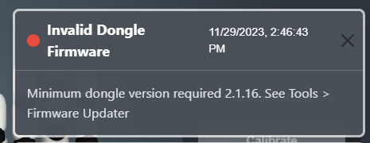
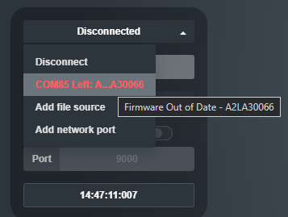
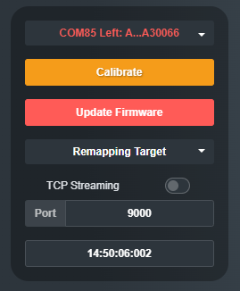
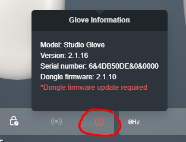
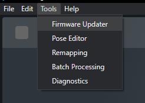
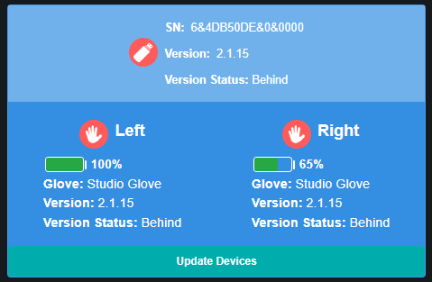
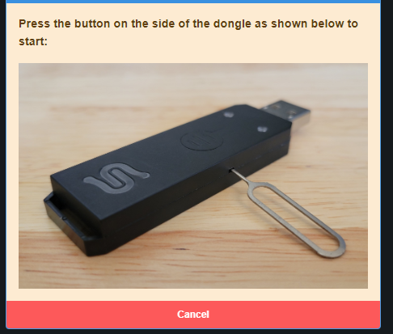
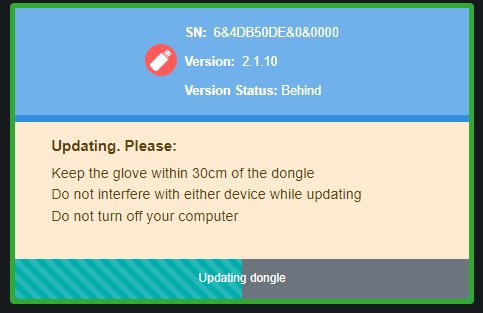
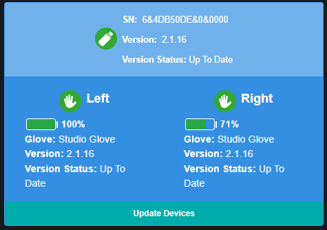

Requirements
Firmware out of date indicators
- If your glove firmware is out of date Hand Engine will notify you in a few ways:
- Pop up notification

- Connection dropdown letters highlighted in red

- Update firmware button shows up. upon selecting the glove from the connection dropdown

- Information indicator highlighted in red

Performing the firmware update
- Connect the USB dongle to your PC and turn on your gloves. Make sure the USB dongle light is solid blue before starting the firmware update process.
- There are two ways to open the firmware updater:
- Go to the glove connection dropdown and selected the glove with the letters highlighted in red, then click on Update Firmware


- Click on Update Firmware In Hand Engine, go to Tools -> Firmware Updater in the top left menu.

- The latest firmware is inbuilt into the Hand Engine version you are running. If the gloves are not recognized, try unplugging and replugging the dongle, and reopening the updater.
If the icons have a red background, it indicates that the firmware for those devices is outdated.
Click on Update Devices to begin the process

- If prompted, use a pin to set the dongle into firmware update mode as shown in the picture
Make sure the dongle is still plugged in while using the pin.

- The updater will update the fingle firmware first and then it will proceed to update the gloves.

- The entire process will take around 6 minutes.
